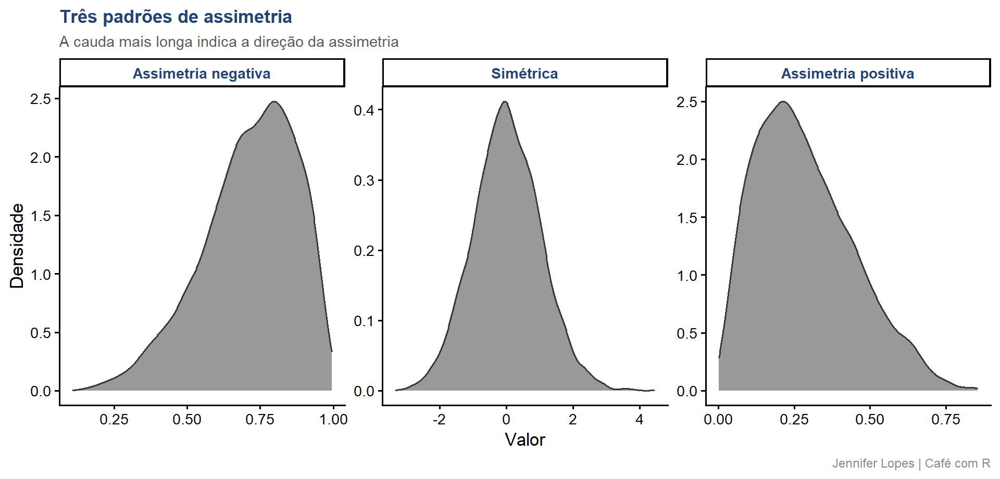
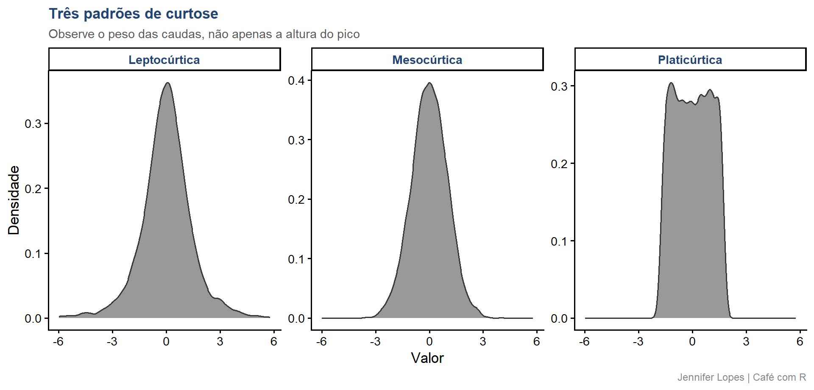
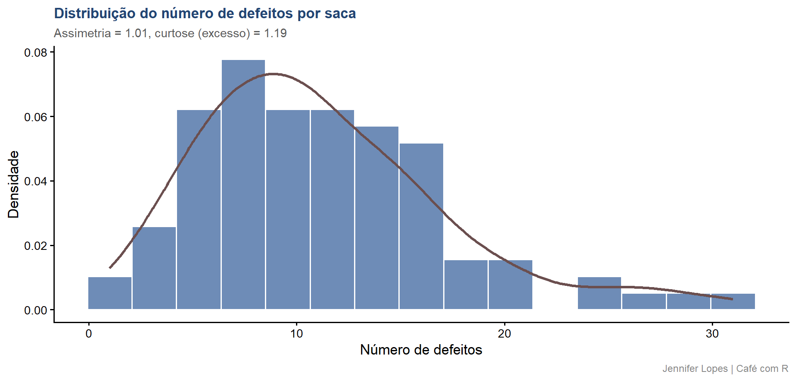

Aula 35. CV%, assimetria e curtose
O que a forma da distribuição revela sobre os dados, com leitura visual de cada padrão
Acompanhe o Café com R
SITE OFICIAL > https://jenniferlopes.github.io/meu_site/
Objetivos da aula
- Aprofundar a interpretação do coeficiente de variação, com valores de referência por área
- Definir assimetria e reconhecer seu sinal e sua magnitude em uma distribuição
- Definir curtose e distinguir os padrões leptocúrtico, mesocúrtico e platicúrtico
- Comparar visualmente curvas com diferentes graus de assimetria e curtose
- Aplicar essas medidas a um conjunto de dados real e interpretar o resultado
- Reconhecer os erros mais comuns na leitura da forma de uma distribuição
Bloco 1
Coeficiente de Variação, Aprofundamento
CV%, revisão e aprofundamento
\[CV = \frac{s}{\bar{x}} \times 100\]
O CV% expressa a dispersão dos dados em termos relativos à média, o que permite comparar variáveis com unidades ou magnitudes diferentes.
Um CV% de 15% em uma variável com média 10 representa uma dispersão absoluta bem menor do que um CV% de 15% em uma variável com média 1000.
No contexto deste estudo: o CV% do número de defeitos por saca indica o grau de heterogeneidade da qualidade entre as sacas amostradas.
CV%, valores de referência por área
| Classificação | CV% | Uso típico |
|---|---|---|
| Baixo | Até 10% | Experimentos de campo bem controlados |
| Médio | 10% a 20% | Maioria dos experimentos agronômicos |
| Alto | 20% a 30% | Variáveis com maior variabilidade natural |
| Muito alto | Acima de 30% | Contagens, proporções, dados de campo aberto |
Important
Atenção: essa classificação é uma referência da literatura agronômica, não uma regra universal. Variáveis de contagem, como número de defeitos, tendem a apresentar CV% mais alto por característica intrínseca, sem que isso indique falha experimental.
Código: CV% dos defeitos por saca
Output: CV% dos defeitos por saca
# A tibble: 1 × 3
media dp cv
<dbl> <dbl> <dbl>
1 11.2 5.98 53.5- O CV% obtido está na faixa alta a muito alta, coerente com o esperado para uma variável de contagem, e não deve ser interpretado isoladamente como problema de qualidade dos dados.
Bloco 2
Assimetria
Assimetria: definição e fórmula
\[g_1 = \frac{\frac{1}{n}\sum_{i=1}^{n}(x_i - \bar{x})^3}{\left(\frac{1}{n}\sum_{i=1}^{n}(x_i - \bar{x})^2\right)^{3/2}}\]
A assimetria, ou skewness, mede o grau e a direção do desvio de uma distribuição em relação à simetria perfeita.
Uma distribuição simétrica apresenta assimetria próxima de zero, com média e mediana coincidentes.
Interpretação do sinal e da magnitude
Assimetria negativa (cauda à esquerda): a maior parte dos dados se concentra à direita, e valores baixos puxam a cauda.
Assimetria positiva (cauda à direita): a maior parte dos dados se concentra à esquerda, e valores altos puxam a cauda.
Magnitude: valores entre menos 0,5 e 0,5 indicam assimetria aproximadamente simétrica. Valores entre 0,5 e 1, em módulo, indicam assimetria moderada. Valores acima de 1, em módulo, indicam assimetria forte.
Código: três curvas de assimetria
set.seed(2026)
curvas_assimetria <- bind_rows(
tibble(valor = rbeta(5000, 5, 2), tipo = "Assimetria negativa"),
tibble(valor = rnorm(5000, 0, 1), tipo = "Simétrica"),
tibble(valor = rbeta(5000, 2, 5), tipo = "Assimetria positiva")) |>
mutate(tipo = factor(tipo, levels = c(
"Assimetria negativa", "Simétrica", "Assimetria positiva")))Gráfico: leitura visual da assimetria

Código: assimetria dos defeitos por saca
Output: assimetria dos defeitos por saca
# A tibble: 1 × 1
assimetria
<dbl>
1 1.01- O valor obtido indica assimetria positiva moderada a forte, coerente com o padrão visual da curva “Assimetria positiva” apresentada anteriormente. A cauda direita da distribuição, sacas com número elevado de defeitos, puxa a média para cima em relação à mediana.
Bloco 3
Curtose
Curtose: definição e fórmula
\[g_2 = \frac{\frac{1}{n}\sum_{i=1}^{n}(x_i - \bar{x})^4}{\left(\frac{1}{n}\sum_{i=1}^{n}(x_i - \bar{x})^2\right)^{2}} - 3\]
A curtose, na forma de excesso de curtose, mede o peso das caudas de uma distribuição em relação à distribuição normal, e não apenas a altura do pico central.
A distribuição normal tem excesso de curtose igual a zero, por definição.
Interpretação: leptocúrtica, mesocúrtica, platicúrtica
Leptocúrtica (excesso de curtose positivo): caudas mais pesadas que a normal, maior probabilidade de valores extremos.
Mesocúrtica (excesso de curtose próximo de zero): caudas equivalentes às da distribuição normal.
Platicúrtica (excesso de curtose negativo): caudas mais leves que a normal, menor probabilidade de valores extremos.
Important
Atenção: a curtose não deve ser lida apenas pela altura do pico central. Duas distribuições podem ter picos parecidos e curtoses muito diferentes, a diferença está no comportamento das caudas.
Código: três curvas de curtose
set.seed(2026)
curvas_curtose <- bind_rows(
tibble(valor = rt(5000, df = 3), tipo = "Leptocúrtica"),
tibble(valor = rnorm(5000, 0, 1), tipo = "Mesocúrtica"),
tibble(valor = runif(5000, -sqrt(3), sqrt(3)), tipo = "Platicúrtica")) |>
mutate(tipo = factor(tipo, levels = c(
"Leptocúrtica", "Mesocúrtica", "Platicúrtica")))Gráfico: leitura visual da curtose

Código: curtose dos defeitos por saca
Output: curtose dos defeitos por saca
# A tibble: 1 × 1
curtose
<dbl>
1 1.19- O excesso de curtose obtido está próximo de zero a levemente positivo, indicando caudas semelhantes às da distribuição normal, apesar da assimetria positiva já identificada. Assimetria e curtose descrevem aspectos independentes da forma da distribuição.
Bloco 4
Lendo a Forma da Distribuição na Prática
Código: histograma com forma anotada
resumo_forma <- amostra_defeitos |>
summarise(
assimetria = skewness(defeitos, type = 2),
curtose = kurtosis(defeitos, type = 2))
amostra_defeitos |>
ggplot(aes(x = defeitos)) +
geom_histogram(aes(y = after_stat(density)),
bins = 15, fill = cores_cafe["azul_claro"],
color = "white", alpha = 0.8) +
geom_density(color = cores_cafe["marrom"], linewidth = 1.2) +
labs(
title = "Distribuição do número de defeitos por saca",
subtitle = paste0("Assimetria = ", round(resumo_forma$assimetria, 2),
", curtose (excesso) = ", round(resumo_forma$curtose, 2)),
x = "Número de defeitos",
y = "Densidade",
caption = "Jennifer Lopes | Café com R") +
temaGráfico: histograma com forma anotada

O que fazer diante de assimetria forte
Transformação: logarítmica ou raiz quadrada, quando o objetivo é aproximar a normalidade para uso de testes paramétricos.
Medida robusta: reportar mediana e IQR no lugar de média e desvio padrão, quando o objetivo é apenas descrever os dados.
Teste não paramétrico: alternativa direta quando a transformação não normaliza os dados de forma satisfatória, ou quando a interpretação na escala original é prioridade.
A escolha depende do objetivo da análise, descrever, comparar grupos ou modelar, e não existe opção única correta para toda situação.
Erro comum 1, confundir curtose com altura do pico sem olhar as caudas
Duas distribuições podem ter picos de altura semelhante e curtoses distintas.
A curtose é definida pelo comportamento das caudas, não pela altura central. Avalie sempre o histograma completo, não apenas a região de maior densidade.
Erro comum 2, tratar assimetria e curtose de amostra pequena como diagnóstico definitivo
Assimetria e curtose calculadas em amostras pequenas apresentam alta variabilidade de amostra para amostra.
Em amostras com menos de 30 observações, essas medidas devem ser interpretadas como indicativas, não como diagnóstico definitivo da forma da população.
Erro comum 3, aplicar teste que assume normalidade sem checar a forma da distribuição
Testes como o teste t assumem, entre outras condições, que os dados seguem distribuição aproximadamente normal.
Ignorar assimetria e curtose elevadas e aplicar o teste diretamente pode invalidar a conclusão, especialmente em amostras pequenas, onde o teorema central do limite ainda não garante aproximação à normalidade.
Resumo: CV%, assimetria e curtose
| Medida | O que revela | Valor de referência | Função no R |
|---|---|---|---|
| CV% | Dispersão relativa à média | Depende da área, ver tabela | sd()/mean()*100 |
| Assimetria | Direção e grau do desvio da simetria | Próximo de zero é simétrico | skewness() |
| Curtose (excesso) | Peso das caudas em relação à normal | Próximo de zero é mesocúrtica | kurtosis() |
Obrigada!

Continue praticando e explorando.
Esta aula é parte do projeto Café com R. É open source. Use, compartilhe e adapte.
Siga o Café com R
Que cada gole desperte uma nova ideia.
Que cada script abra uma nova conversa.
Que o Café com R se torne um ponto de encontro nosso.
SITE OFICIAL > https://jenniferlopes.github.io/meu_site/

Jennifer Lopes | Café com R